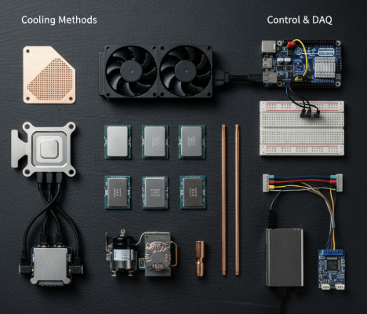
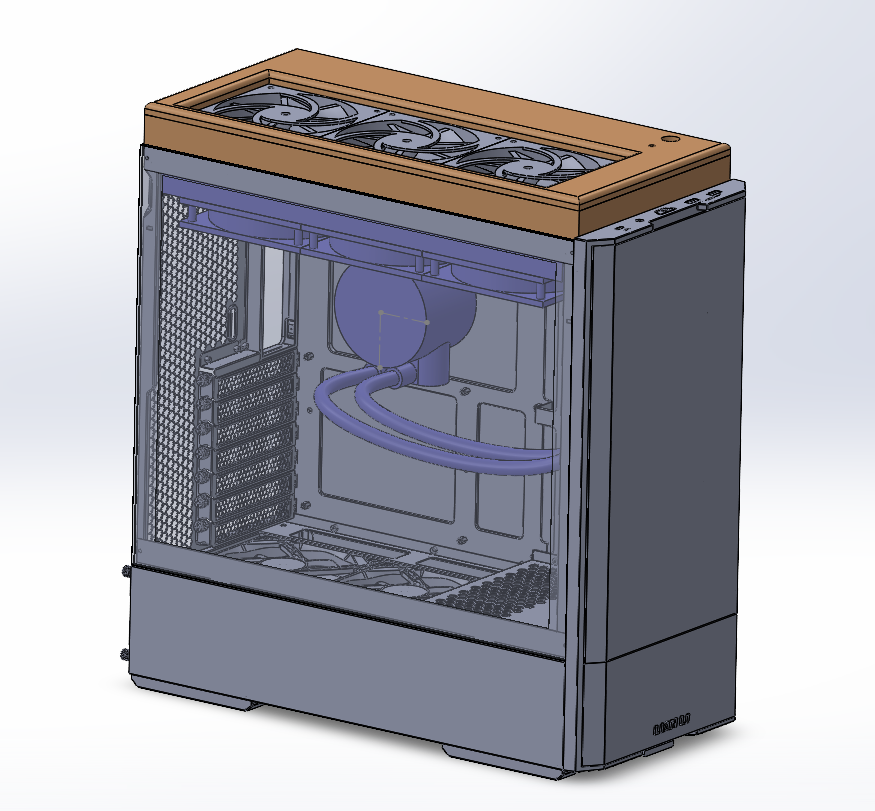
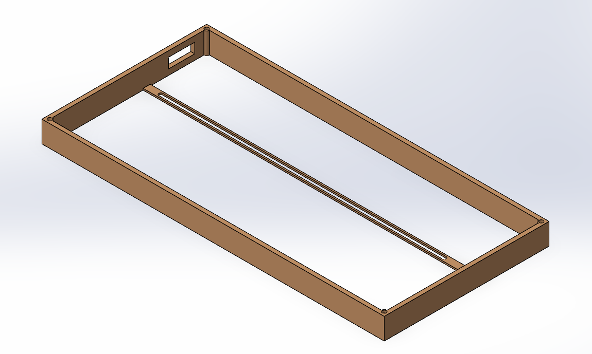
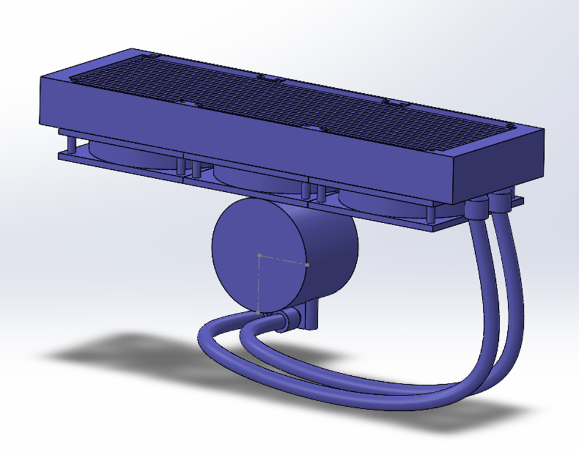
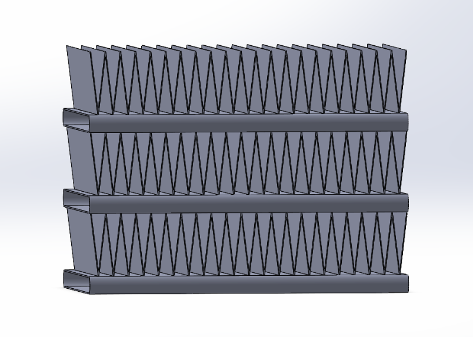
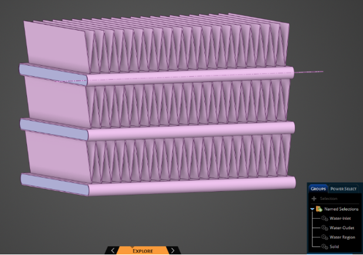
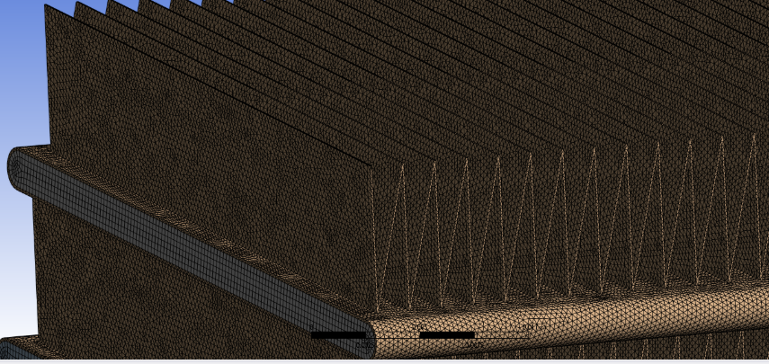
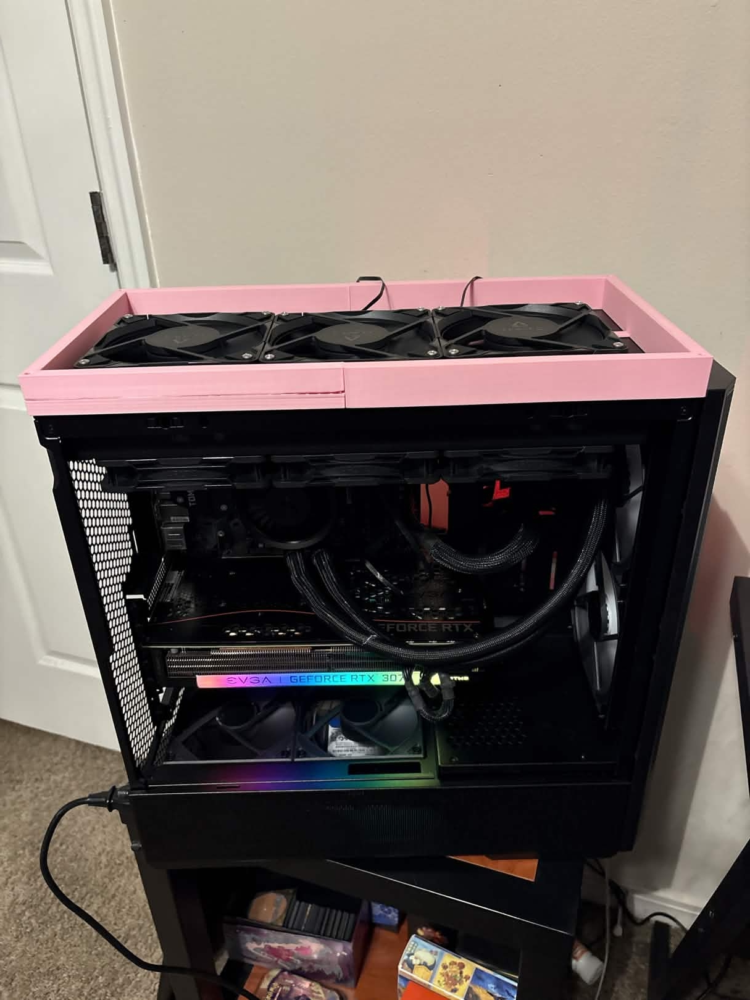

University of Central Florida • College of Engineering and Computer Science
External Performance Unit
A Modular Cooling Enhancement Kit for the Arctic Liquid Freezer III
Senior Design Showcase • Spring 2026
Dawson Sallee • Van Nguyen • David Loaiza • Joel Lopez
Faculty Advisor: Darshan Yadav | Mechanical & Aerospace Engineering
Welcome to our Senior Design presentation. We are Team 2 from UCF's College of Engineering, and today we're presenting the External Performance Unit — a modular cooling upgrade kit.
Meet the Team
Dawson SalleeMechanical EngineeringSystems Lead & Controls
Van NguyenMechanical EngineeringElectrical Systems & DAQ
David LoaizaMechanical EngineeringMechanical Design & CAD
Joel LopezMechanical EngineeringCFD, Testing & Software
Faculty Advisor: Dr. Darshan Yadav
We are four mechanical engineering seniors. Dawson led systems integration and controls. Van focused on electrical systems and data acquisition. David owned the mechanical design and CAD. Joel led CFD, experimental testing, and our telemetry and control software. Our faculty advisor is Dr. Darshan Yadav.
The Problem
Modern CPUs generate more heat than ever. When cooling fails to keep up, processors throttle — slowing themselves down to survive.
0
Watts
Baseline cooler thermal limit
$250+
Cost to upgrade to a premium cooler
38
dBA
Loud stock noise at max load
There is no affordable upgrade path — users must discard functional hardware and spend hundreds on a replacement.
As CPUs have become more powerful, thermal management is the single biggest obstacle to performance. When a CPU gets too hot, it protectively slows itself down — a process called thermal throttling. Mid-range coolers like the Arctic Liquid Freezer III top out at about 265 watts. If users need more, the only option is to throw away their existing cooler and spend over 250 dollars on a premium replacement. There is no affordable middle ground. That's the gap we set out to fill.
Why This Topic?
⚡
Performance Demand
AI training, 3D rendering, and gaming push CPUs to their thermal limits daily
♻
Electronic Waste
Functional hardware is discarded every few years, creating massive e-waste
💰
Cost Barrier
Premium cooling solutions cost $250+ — inaccessible to students and budget users
We chose this topic because the demand for high-performance computing is exploding — AI training, simulation, rendering, and gaming all generate extreme heat loads. At the same time, the industry encourages a wasteful cycle of replacing perfectly functional hardware. We wanted to prove there's a smarter, more sustainable way to get enthusiast-grade performance.
Project Goals
0
Watts TDP
20% thermal improvement
<35
dBA
Quieter than stock at max base load (265 W)
<$65
BOM Cost
Fraction of a premium cooler
<20
Min Install
Simple, no special tools
We defined four critical performance targets. First, increase thermal dissipation capacity to 320 watts — a 20 percent improvement. Second, keep noise under 35 dBA while quieter than the stock cooler at the same 265-watt base load. Third, keep the entire modification kit under 65 dollars. And fourth, make installation possible in under 20 minutes with just a Phillips screwdriver.
Technology Assessment
We evaluated a wide spectrum of cooling and control technologies
Cooling Methods
- Thermal Interface Materials (TIMs)
- Liquid Loop Hydraulics
- Thermoelectric Coolers (TECs)
- Vapor Compression Refrigeration
- Thermosyphons & Heat Pipes
- Jet Impingement Cooling
Control & DAQ
- Arduino MCU vs. Raspberry Pi SBC
- Fuzzy Logic Controllers
- Machine Learning Models
- HWiNFO64 Telemetry API
- T-Type Thermocouples
- Intel 4-Wire PWM Standard

Before committing to a design, we conducted extensive technology research. On the cooling side, we evaluated everything from thermal interface materials and liquid loops to exotic options like thermoelectric coolers, vapor compression refrigeration, thermosyphons, and jet impingement cooling. On the controls side, we compared microcontrollers versus single-board computers, and evaluated fuzzy logic, machine learning, and reinforcement learning control paradigms. The photo summarizes representative hardware we studied for cooling paths and data acquisition.
Concept Selection
Three finalist concepts evaluated via Weighted Pugh Matrix
Hybrid Internal Mod
Internal push-pull with decoupled mounts
Risk: VRM/RAM interference
External Performance Unit
External push-pull module — modular case-top mount
Selected: Best trade-off balance
Chained Radiator Loop
Secondary radiator spliced into liquid loop
Failed: BOM > $175
Using a structured morphological analysis and weighted Pugh matrix, we narrowed down to three finalist concepts. The Hybrid Internal Mod risked colliding with motherboard components. The Chained Radiator Loop exceeded our budget at over 175 dollars. The External Performance Unit — or EPU — provided the best mathematical balance of thermal performance, acoustics, cost, and compatibility. It was selected for full development.
The EPU Concept
A push-pull fan configuration that doubles the static pressure capability of the cooling system.
+31.3%Volumetric airflow increase
347.9WTheoretical thermal ceiling
Push-pullShares load across two fan rows for lower RPM at the same airflow
The EPU works by adding a second row of fans on the exterior of the PC case, creating a push-pull configuration through the radiator. This effectively doubles the system's static pressure capability, allowing air to overcome the high aerodynamic impedance of the 38-millimeter thick radiator core. Our analytical P-Q curve modeling predicted a 31.3 percent increase in volumetric airflow, lifting the theoretical thermal ceiling to nearly 348 watts. Sharing the pressure work between two fan rows also lets us run each stage at lower RPM for a given cooling job — which is a big part of how we improved acoustics.
Mechanical Design
- 3D-Printed PETG Housing — High temperature resistance, durable
- 3x Arctic P12 Pro Fans — High-static-pressure, 3000 RPM
- Magnetic Lid — Tool-less removal for maintenance
- #6-32 UNC Mounting — Universal 120mm fan standard
- 360 x 120 x 65 mm — Fits any case supporting the stock cooler
The EPU housing is 3D-printed from PETG, chosen for its high temperature resistance and dimensional stability. It houses three Arctic P12 Pro 120-millimeter fans, which are optimized for high static pressure. The housing mounts to the PC case using standard number 6-32 machine screws. A magnetic lid provides tool-less access for maintenance and dust filter replacement. The entire assembly fits within the same footprint as the original cooler.
EPU Housing Design

Full Assembly with PC Case

Housing Base — Isometric

Arctic Liquid Freezer III
Here you can see the complete CAD assembly. On the left, the full system integration with the EPU mounted on top of a Lian Li LANCOOL 207 case. In the center, the isolated housing base showing the PETG frame and internal rib structure. On the right, the baseline Arctic Liquid Freezer III cooler that the EPU is designed to enhance.
Electrical & Control Design
SATA Direct-Drive Topology
Bypasses motherboard fan headers entirely. Draws power safely from PSU via fused SATA connection — large safety margin over peak current draw.
Embedded control & firmware
Hardware-timed 25 kHz PWM fan control, interrupt-driven tachometer reading, and automatic stall detection with recovery.
Acoustics strategy
Running the EPU at lower PWM where possible reduced case noise while preserving thermal headroom — matching our measured dBA improvements at comparable CPU load.
On the left is our SATA direct-drive reference schematic: 5V and 12V from SATA, fused 12V bus, Arduino PWM to all fans, leader tach on D2. On the right, the bullets walk through topology, firmware, and acoustics — and below that is the real assembly in the housing. Firmware generates 25 kilohertz PWM and watches the tach line for stalls. For sound, we used push-pull and lower PWM where thermals allowed, matching the acoustic data we show later.
CFD Simulation
ANSYS Fluent analysis of the radiator's thermal and aerodynamic performance

Radiator Section Model

ANSYS Discovery — Flow Regions

Volume Mesh Generation
To validate our design analytically, we performed computational fluid dynamics simulations using ANSYS Fluent. We modeled a representative section of the radiator with accurate fin density and pipe dimensions. After refining the geometry in ANSYS Discovery and defining fluid regions, we generated a high-quality volume mesh in ANSYS Mechanical. The simulations ran four scenarios comparing single-fan versus push-pull configurations at both low and high RPM.
CFD Results
| Configuration | Air Velocity | Heat Transfer Rate | Delta-T Water |
|---|
| Single Fan @ 900 RPM | 1.0 m/s | 155 W | 11.16 °C |
| Single Fan @ 3000 RPM | 2.0 m/s | 177.9 W | 12.04 °C |
| Push-Pull @ 900 RPM | 1.25 m/s | 162.5 W | 11.34 °C |
| Push-Pull @ 3000 RPM | 2.48 m/s | 186 W | 12.36 °C |
+4.5%Heat rejection rate increase
+14.5%Air-side heat transfer coefficient
-30%Required RPM for equal cooling
The CFD results confirmed our analytical predictions. At maximum RPM, the push-pull configuration increased the heat rejection rate by 4.5 percent and the air-side heat transfer coefficient by 14.5 percent. But the most significant advantage is acoustic: by sharing the pressure load between two fan rows, we can achieve the same cooling at 30 percent lower RPM — which translates directly into a 9.4 percent noise reduction.
Prototype Build

EPU Prototype — Test Rig
 PC Interior — Arctic LFIII
PC Interior — Arctic LFIII
Software — Dashboard (left)
Software — Monitors (right)
Four-panel layout: EPU on the rig, interior with the LF III, then the desktop capture split — left half is our EPU Control telemetry UI, right half is Ryzen Master and Task Manager under load. That is how we ran repeatable thermal and acoustic sessions.
Test Methodology
🔥
Thermal Load
Prime95 "Small FFTs" — industry-standard worst-case CPU stress test
📈
Data Acquisition
HWiNFO64 telemetry logging at 2 Hz — CPU temp, power, fan RPM
⏱
Duration
45-minute continuous cycles to ensure true thermal equilibrium
🔊
Acoustic
Calibrated SPL meter at 1m distance, A-weighted (dBA)
All metrics reported as Delta-T (ΔT = Tcomponent - Tambient) for normalized, repeatable results
Our testing methodology followed industry-standard practices. We used Prime95 Small FFTs to generate a consistent worst-case thermal load. HWiNFO64 logged all telemetry at 2 hertz. Each test ran for 45 continuous minutes to ensure the liquid cooling loop reached true thermal equilibrium. Acoustic measurements used a calibrated SPL meter at one meter distance with A-weighting. All thermal results are reported as Delta-T to eliminate ambient temperature as a variable.
Thermal Results
Maximum TDP Sustained
336.3 W
Target: 320 W — PASS
Peak CPU Temperature
82.6 °C
Throttle limit: 100 °C — Safe margin
Coefficient of Performance
25.1
Target: ≥ 19.0 — PASS
The thermal results exceeded every target. The system maintained a continuous 336.3 watt heat load — well above our 320 watt goal. The CPU temperature plateaued at 82.6 degrees Celsius, which is 17 degrees below the throttling limit. This flat plateau confirms true thermal equilibrium was achieved. The calculated Coefficient of Performance was 25.1, demonstrating exceptional cooling efficiency for the electrical power consumed.
Power & Safety
Max EPU Power Draw
13.39 W
Limit: 20 W — PASS
EMI Stall Detection
Instant Recovery
Detected & recovered in < 2s — PASS
The Arduino's interrupt-driven watchdog timer detected simulated stall faults at the 9-minute and 26-minute marks and immediately restored the PWM signal.
The power consumption peaked at just 13.39 watts — well below the 20-watt safety limit for the SATA topology. We also validated the firmware's stall detection failsafe. During testing, we introduced simulated stall faults at the 9-minute and 26-minute marks. The Arduino's watchdog timer instantly detected the absence of tachometer pulses and executed the kick-start routine, successfully preventing a thermal runaway event.
Acoustic Results
8.8 dBA reduction at equivalent 265 W load — lower fan speeds in push-pull plus balanced tuning vs. stock
The acoustic results were one of our proudest achievements. The stock cooler produced 38.1 decibels at 265 watts. With the EPU engaged at the same load, we measured 29.3 decibels — an 8.8 dBA improvement. Even at higher CPU load, we stayed near our design noise budget. The chart still references our original 32 dBA line from milestone testing; our stated presentation goal was quieter than stock under the same 265-watt base load, which we clearly met.
Results Summary
| Metric | Target | Result | Status |
|---|
| Thermal Capacity (TDP) | ≥ 320 W | 336.3 W | PASS |
| Coefficient of Performance | ≥ 19.0 | 25.1 | PASS |
| Acoustic Output @ Max | ≤ 35 dBA | 31.5 dBA | PASS |
| Max Power Draw | ≤ 20 W | 13.39 W | PASS |
| Exhaust Air Delta-T | ≤ 15 °C | 3.16 °C | PASS |
| Stall Detection Failsafe | ≤ 2s | Instant | PASS |
| Bill of Materials | ≤ $65 | $64.05 | PASS |
Here is the complete results summary. Every single critical performance parameter was met or exceeded. We achieved 336.3 watts thermal capacity, a coefficient of performance of 25.1, 31.5 decibels at maximum load, a power draw of just 13.39 watts, exhaust delta-T of only 3.16 degrees, instant stall detection, and a total bill of materials cost of 64 dollars and 5 cents. The EPU successfully transforms a mid-range cooler into an enthusiast-grade system.
Feedback Integration
How advisor and peer feedback shaped our final design
M3 → M5 Feedback
Refined CFD boundary conditions based on advisor input; added exponential scaling law for accurate full-radiator temperature predictions.
M5 → M6 Feedback
Extended test duration from 30 to 45 minutes per advisor recommendation to ensure true thermal equilibrium in the liquid loop.
Safety Enhancements
Added 2A inline fuse and EMI stall detection failsafe based on FMEA risk analysis of 50+ potential failure modes.
Throughout the project, we actively incorporated feedback from our advisor and peers. After Milestone 3, we refined our CFD boundary conditions and added exponential scaling laws for more accurate predictions. After Milestone 5, our advisor recommended extending test durations from 30 to 45 minutes to ensure the liquid loop truly reached equilibrium. Our comprehensive FMEA analysis of over 50 failure modes led to key safety additions including the inline fuse and the stall detection failsafe.
Broader Impacts
💲
Economic Impact
Enthusiast-grade cooling for $65 vs. $250+. Makes high-performance computing accessible to students, professionals, and budget users worldwide.
🌎
Environmental Impact
The "upcycling" philosophy extends hardware life and reduces electronic waste. The PETG housing is durable for extended lab and field use.
🛠
Accessible Manufacturing
FDM 3D printing enables localized, low-cost production without complex global supply chains.
The EPU has significant broader impacts. Economically, it provides enthusiast-grade performance for 65 dollars instead of 250 — democratizing high-performance computing for students and budget users. Environmentally, our upcycling approach extends the life of existing hardware, keeping functional radiators and pumps out of landfills. And from a manufacturing perspective, 3D-printed housings keep early production accessible without expensive tooling.
Conclusions
Mid-range cooling hardware can be upgraded to enthusiast-grade performance through a cost-effective, modular add-on — at one-quarter the cost of a premium replacement.
336 WThermal Capacity
31.5 dBAAcoustic Output
$64Total Cost
7/7Metrics Passed
In conclusion, our project proved that mid-range cooling hardware CAN be upgraded to enthusiast-grade performance through a cost-effective, modular add-on. The EPU achieved 336 watts of thermal dissipation, 31.5 decibels of acoustic output, a total cost of 64 dollars, and passed all seven critical performance metrics. This validates the viability of the upcycling philosophy for PC hardware.
Future Work
RPM Sync Offset
Implement firmware-based push/pull RPM detuning to eliminate harmonic beat frequencies
Accelerated Life Testing
Certify 25,000-hour MTBF target through extended thermal cycling of PETG housing and fan assemblies
Production Scaling
Transition from FDM 3D printing to injection molding for high-volume manufacturing
For future work, we recommend three key areas. First, implementing an RPM Sync Offset in the firmware to eliminate the subtle harmonic beat frequencies observed during testing. Second, conducting accelerated life testing to certify the 25,000-hour MTBF target for the PETG housing and fan stack. And third, transitioning the housing from FDM 3D printing to injection molding for commercial-scale production.
University of Central Florida • College of Engineering and Computer Science
Thank You
External Performance Unit — Senior Design Spring 2026
Dawson Sallee • Van Nguyen • David Loaiza • Joel Lopez
Faculty Advisor: Darshan Yadav
Thank you for watching our presentation. We're proud of what our team accomplished this year. If you have any questions, we'd be happy to discuss our project in more detail.